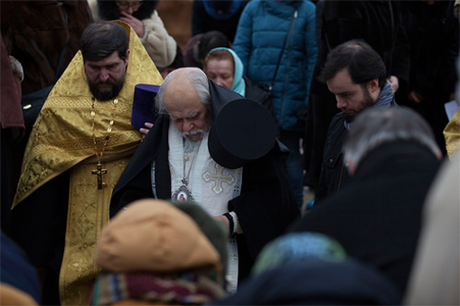

7 фев 2017
Освящение закладного камня
7 февраля 2016 года в 14.00 прихожане строящегося храма в честь преподобного Саввы Сторожевского встречали владыку Пантелеимона, епископа Орехово-Зуевского. Жители нашего района собрались на чин освящения закладного камня в фундамент будущего храма. Это поистине историческое событие для жителей нашего района и города в целом. Храм преподобного Саввы Сторожевского...